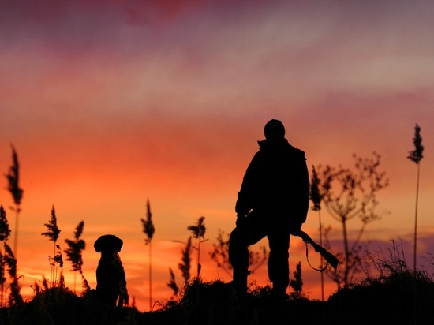
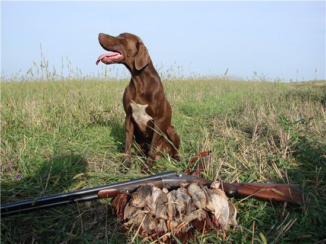
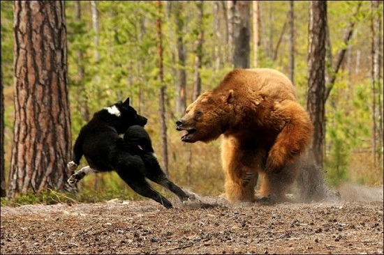

|  |
Друзья, сегодня мы хотим обратиться к такому древнему, дошедшему к нам из глубины веков, занятию для настоящих мужчин, как охота.
Загородная жизнь – отличный способ насладиться естественной красотой природы и избавиться от городской суеты. Помимо этого, проживание загородом – это уникальная возможность почувствовать себя настоящим добытчиком, нужно лишь выйти на охоту.
Вдвойне приятна охота в хорошей компании, где есть возможность поделиться радостью, впечатлениями и азартом, а также получить ценные советы в кругу единомышленников.
Ну и конечно, отличным компаньоном для человека на охоте может стать четвероногий друг. Зачастую, грамотно обученная, надрессированная собака является гарантом удачной охоты, ведь она - глаза и уши своего хозяина, у нее есть чутье, которого нет у человека. Рано или поздно практически каждый охотник задумывается над приобретением собаки, ведь любимое увлечение с появлением ушастого друга приобретает новое качество.
Сегодня предлагаем поговорить об охотничьих собаках и о том, на что следует обратить внимание, выбирая себе одну из них.
Выбор собаки
Выбор собаки для охоты — нелегкая задача, даже для искушенного, опытного охотника, а для начинающего - тем более. Не зная, чем руководствоваться, молодой охотник нередко выбирает собаку беспородную или породистую, но не подходящую для имеющихся условий.
Многочисленные советы «старых охотников» помогают при выборе собаки далеко не всегда. Уж очень часто они даются на основании личных вкусов.
Подобные советы только дезориентируют начинающего охотника. Как правило, ему не нужны указания-рецепты, а требуются практические рекомендации для самостоятельного выбора собаки.
 |
Стоит ли выбирать собаку непременно породистую? Какие породы собак – гончие, легавые или другие – будут наиболее подходящими для данных условий? Какую из пород, составляющих эти группы, выбрать? Какого возраста, окраса, пола и даже роста, следует выбирать собаку? Эти и многие другие вопросы не всегда удается правильно разрешить, выбирая собаку, как своего будущего помощника на охоте.
Известно, что даже беспородная собака иногда оказывается хорошим помощником на охоте. Но появление таких собак – случайность. Потомство от них обычно не наследует охотничьих качеств родителей. Выбирая собаку беспородную, нельзя быть уверенным в успехе ее обучения для охоты, кроме того, велика вероятность, что она не оправдает сил и средств, требуемых на ее выращивание. Выбирая собаку взрослую, работающую, для практического использования, можно, казалось бы, пренебречь ее породистостью. Но здесь выступают эстетические требования к облику и стилю работы собаки, приходится отказываться от участия в селекционной работе с породами, от участия в выставках и полевых испытаниях собак. В итоге большинство охотников считают, что имеет смысл выбирать собаку только породистую.
По характеру применения современные породы охотничьих собак делятся на следующие группы: лайки, гончие, легавые, спаниели, борзые и норные. Охота с представителями каждой из них полна захватывающего интереса. Поэтому и столь категоричны утверждения многих любителей, которые на вопрос начинающего о выборе собаки чаще всего называют свою излюбленную породу, даже не узнав, где и на кого с нею будут охотиться. В действительности же каждая порода оказывается наилучшей лишь в определенных условиях охоты и содержания.
На этом и должен основываться выбор собаки по породе.
|  |
Наряду с условиями охоты, имеющимися в данной местности, выбор собаки определяется также и условиями жизни и работы самого охотника. Горожанину, имеющему возможность охотиться преимущественно во время отпуска, более доступна и интересна охота с легавой. А сельскому жителю, который предельно занят в сезон уборочных работ, не приходится и думать об охоте ранней осенью. Такие охотники имеют гораздо больше возможностей для охоты с гончими или борзыми собаками в поздне-осенний и зимний периоды. Охотник-промысловик, работник лесного хозяйства, егеря и охотоведы предпочитают лаек, а иногда и норных собак. Уступая на многих охотах более специализированным породам, эти собаки имеют несомненное преимущество благодаря разносторонности и возможности применения в различные сезоны.
При выборе собаки одной из пород, составляющих специализированные группы, приходится также учитывать особенности каждой породы: темперамент, стиль, характер шерстного покрова, размеры и даже масть.
Начинающему охотнику, живущему в районах, где собаководство хорошо развито, при выборе собаки лучше всего лично ознакомиться с особенностями работы тех пород, которые его интересуют. Для этого нужно узнать, когда местное общество охотников будет проводить их испытания или состязания, и, посмотрев их в поле самому, сделать окончательный выбор.
Помимо чисто охотничьих особенностей пород, при выборе собаки приходится учитывать их приспособленность к различным условиям содержания, например холодостойкость, либо домашние условия в семье самого охотника. Нередко бытовые требования и интересы собственно охоты противоречат друг другу и приходится выбирать из двух зол меньшее. Например, темные одноцветные окрасы легавых собак неудобны на охоте, так как они менее заметны. Но они же предпочтительны при комнатном содержании собаки, потому что эти цвета шерсти немаркие и меньше заметны на одежде...Выбор собаки для заядлого любителя породы или определенного типа собак внутри данной породы, как правило, не связывается со всеми этими мелкими деталями. Такой любитель будет мириться с целым рядом неудобств во имя своей основной склонности. Но для начинающего, еще не успевшего «заболеть» определенным типом собаки, полезно при выборе собаки заранее ознакомиться со всеми особенностями, достоинствами и недостатками своего будущего четвероногого друга.
|  |
Выбор взрослой работающей собаки можно рекомендовать только после проверки ее полевых качеств. Некоторой гарантией этих качеств может служить оценка собаки на полевых испытаниях, но только в том случае, если собаку натаскивал и в дальнейшем использовал на охоте только один человек. В противном случае собака может быть испорчена неумелым обращением с ней, особенно если после испытаний с ней охотились разные люди, поэтому выбор такой собаки не имеет смысла.
Выбор собаки уже выращенной, но еще не натасканной, следует осуществлять на основании ее экстерьерной оценки, анализа родословной и после некоторого ознакомления с особенностями ее нрава. Желательно, чтобы собака была спокойного, уравновешенного характера. Нужно знать, что выбор собаки очень возбудимой, нервозной, злобной или, наоборот, трусливой, в будущем может привести к трудностям при ее дрессировке и натаске. Да и в повседневной жизни они постоянно причиняют массу неудобств.
При выборе собаки следует знать, что гораздо легче натаскивать молодого пса, чем переучивать собаку, испорченную неумелой дрессировкой и натаской. Собаки, не бывшие в поле, даже взрослые, нередко легко принимаются за работу. А с побывшими в неопытных руках и испорченными — приходится немало потрудиться, часто без всякого успеха.Не следует выбирать собаку, на которую отсутствуют документы о происхождении, или хотя бы — на ее принадлежности данному владельцу. При выборе собаки необходимо также проверить справку ветеринарного врача о том, что данная собака здорова и ей сделана прививка против бешенства.
Для выбора собаки проще всего обратиться в местное общество охотников. Там всегда можно получить сведения о продаваемых собаках, ознакомиться с зарегистрированными производителями, по книге вязок и щенений узнать о молодняке или перспективах его появления. Одновременно начинающий охотник может получить консультацию по вопросам собаководства от работников Общества или в секции собаководов.
Выбирая собаку для охоты, нужно помнить, что ее рабочие качества могут полностью проявиться только при условии правильного выращивания, содержания, обучения и тренировки.
Друзья, надеемся,наши советы были интересны и полезны для вас! Тема охоты новая для наших новостей и мы обязательно будем развивать ее в дальнейшем, также как и остальные темы, связанные с загородной жизнью. Мы хотим продемонстрировать насколько такой образ жизни может быть плодотворным, насыщенным и многогранным.